戴曙光
2010年6月，中美教育高级论坛在北京森根国际大酒店举办，美国加利福尼亚州立大学安淑华博士和几位美国教师参加了此次论坛，其中一位女教师现场展示了一节初中数学课“勾股定律”，通过“摆豆子”游戏活动来证明直角三角形的三边关系。
“初中学生还在摆豆子？”我很好奇，安博士的回答大大出乎我的意料：“美国大学的数学教育是十分重视直观操作的，离开了形象思维，抽象思维就像断了线的风筝。”
是啊！警察破案，单凭受害人对罪犯的体貌特征的描述，是很难找到犯罪嫌疑人的，往往要根据受害人的描述画出犯罪嫌疑人的头像，让受害人辨认，再修改，直到画得像为止，从而顺利地找到犯罪嫌疑人。我们成年人在解一道题时，也常常需要把文字画成图形，方能找到解决问题的办法，何况未成年人呢！
儿童的认知分为三个阶段：动作语言（操作水平）、图形语言（表象水平）和符号语言（分析水平）。在小学低年级，我们看到的更多的，是学生实际操作和利用图形，在动作和图形中认知，建立丰富的表象，以此支撑符号语言的认知。到了高年级，实际操作变得少了，而文字语言和符号语言越来越复杂，很多学生一看就“晕”，越发感到数学很枯燥，于是对数学失去了兴趣。
打开文字、符号与图形语言的通道，让那些显得刻板的文字或符号变成鲜活的图形，从直观到抽象，从抽象到直观，让形象思维与抽象思维和谐共舞，学生应该会学得轻松快乐一些。
为此，我在分数内容的教学中尝试运用“画数学”的思想与方法，取得了意想不到的效果。
分数的意义看似简单，但在解决分数问题时，学生往往会晕头转向。例如：“一根绳子，第一次截去了它的 ，第二次截去了它的
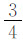
米，哪次截去的绳子长？”很多学生认为第二次截去的长。学生真实想法的背后暴露出对分数意义的一知半解。虽然一个学生能把分数的意义“把一个整体平均分成若干份，其中的一份或几份的数叫分数”背诵出来，但我们可能无法确定他是否真正理解了分数，这是多么可怕的一件事！因此，我们需要的不是定义的分数，而是行为的分数，即通过大量的“操作”活动（如分一分、画一画等活动）来理解分数的意义。
那么，怎样才能使学生真正理解分数呢？我采用“画分数”的方法演绎了分数教学的精彩一刻。
［片段写真］
“今天，老师给大家带来了一份礼物——饼。”我在黑板上画了一个大大的饼，引发了孩子们的一片笑声。
“请你也画一个大饼，表示出它的
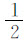
。”学生很认真地画着，并把饼平均分成了2份。“我把 块饼给这位同学，把另一块饼的 分给另一个同学，公平吧？”
“很公平！”孩子们齐声答。
“再画一个小饼的 ，把这块小饼的 分给这位同学。”
“不公平，不公平！”孩子们这才发现上当了。
“为什么？”
“大饼的 大于小饼的 。”
接着，通过画“一盒里两个饼的 是多少”“一盒里饼的 是3个、4个，这盒饼有多少个”，学生不知不觉中感受了“由于一盒饼的个数不同，同样分出它的 ，数量也不同”。
“我们刚才分饼，有什么相同的地方和不同的地方？”
通过比较，师生用一条线段说明了 的内在含义：都是分一盒饼，用“1”表示，平均分成2份，表示其中的一份，就是它的 。
“这个‘1’可以表示1、2、3、4…个饼，也可以表示40个呢，为什么？”
“我们一个班是40个同学。”一个学生叫起来。
“对！40个同学都在‘1’个班里，‘1’还可以表示13亿。”
话音未落，一个同学站起来大声说：“我们一个国家有13亿人。”
“是啊！这个‘1’神通广大，表示的数量不同，它的几分之几的数量也不同。”
“一个盒子里有 个饼，请你画出它的
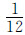
，再画出它的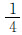
，谁多谁少？为什么？”我进入了第二个教学环节。“12个饼的 是1个，它的 是3个，分的份数越多，每份的数量就越少。”学生的回答很正确。
“再画出它的
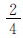
，你又有什么发现？”“ 是 的两倍，同样平均分成4份，2份比1份的数量多。”学生的回答同样令人满意。
在这两个教学环节中，学生饶有兴致地画着大小不同的饼、个数不同的饼，通过比较发现了分数的本质：大小不同的一个饼、个数不同的一盒饼（一个整体），同样的分数，表示的数量也不一样；同样数量的饼，不同的分数表示的数量也不一样。
数学算式是数学问题的高度概括，是经过抽象化、形式化、符号化的语言，它体现了一种简洁美。但对于小学生来说，要体会这一数学的美是相当困难的，因为符号化的语言给学生的直接感受是枯燥无味的。如果老师只拘泥于算式符号的求解，只求算法而不求算理，重结果轻过程，那么学生对计算也就是只知其然而不知其所以然。
计算教学重视在研究“怎么算”中明白算理，培养数感。把算式变成图形，化抽象为形象，让学生在“画算式”探究方法的过程中尝到“甜头”，体会数学学习的乐趣。
有什么样的认识，就有什么样的课堂。我以北师大版五年级下册“分数除法（一）”为内容试了试。
【片段写真】
“老师带来了几道算式，相信同学们很快就会知道结果。”我连续出示了两道计算题：
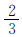
÷1=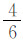
÷2=“ ÷1等于 ，因为一个数除以1还是等于这个数。”一个学生站起来说。
“ ÷2等于 ，分子4除以2得2，分母6除以2得3，因此等于 。”另一个学生站起来回答，显得很自信。很多同学表示赞同，但也有些同学皱着眉头。
“唉，不对呀！ 化简就是 ， 除以2怎么还等于 呢？不对，不对！”第三位学生提出质疑，而且得到越来越多的同学的响应。
“是啊！ 除以2怎么还等于 呢？肯定不对！那到底等于多少呢？”我重复刚才学生的话，也作了相应的表态。
“应该是
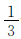
吧！”同学们不敢肯定自己的想法。“不能‘应该是……’，要拿出确切的证据，以理服人。把这个算式画出来试试看。”我提示道。
同学们很认真地画着，有的用一个圆，有的用一个长方形画出它的 ，再把它的 平均分成2份，发现每份是 。
“把算式画出来，一下就明白了，只用分子2除以2，分母3不变。但如果是 除以3，2除以3不够商怎么办？”我得给他们制造点麻烦。
“是啊！怎么办呢？”
“还是想办法把它画出来吧！”我继续提示他们。
很快，同学们想出了不同的办法。如下图：
“把 画成
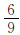
， 除以3等于 。”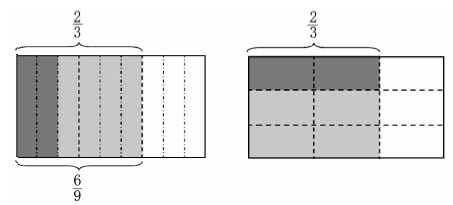
“把 平均分成3份，发现等于
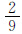
。”学生抢着回答。“请大家仔细观察，你有什么发现？”我问。
“分母乘以3，分子不变。”
“除以3，就是乘以它的 。”
“是吗？刚才 除以2，是不是也可以乘以 呢？试试看。”我说。
学生试着乘以 ，发现结果不变。
“刚才，我们通过把算式画出来，发现除以一个整数，可以变成乘以这个整数的倒数，把除法变成已经学过的乘法来计算。”
接着，我作了课堂小结。数学家华罗庚说：“善于‘退’，足够地‘退’，‘退’到最原始的而不失去重要的地方，是学好数学的一个诀窍。”毋庸置疑，变抽象为形象，通过“画算式”将新知和学生已有的生活经验和知识经验联系起来，简简单单地理解，的确是数学学习的好方法。
苏霍姆林斯基说：“如果哪个孩子学会了画应用题，我就可以有把握地说，他一定能学会解应用题。”学生在解决数学问题时常会出现错误，很多教师都认为学生没有理清数量关系，而学生对数量关系为什么理不清呢？根源在于学生在还没有理解题意的情况下就开始做题了。因此，只要让学生习惯把应用题用图的形式画出来，把抽象的文字语言变成直观的图形语言，数量关系就能理清了。
【片段写真】
“会画画吗？”我问
学生齐答：“会！”
“请画出一辆小车。”我说。
学生很快就在本子上画了一辆小车，虽然有的画得不太像，我还是表扬了他们。
“再画三辆小车。”
学生一辆一辆地画，花的时间比较多，我在等待。
“再接着画61辆。”
“老师，一节课也画不完。”不知哪位学生说出了我需要的这句话。
“老师用半分钟就可以把它画出来，不信，请看。”我用一个圈表示65辆车，又用一个长方形或一条线段表示65辆车。
“简单吧？”我回过头微笑着说。
“简单！”
“这65辆车是车店第一天的成交量，第二天比第一天增加了13辆，请你画出第二天的成交量。”
我发现学生有的画得太多，有的画得太少，于是把这两种情况展示给全班学生。
“这增加的13辆怎样才能画得准确呢？”
“这13辆刚好是65辆的
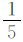
，把上面图形平均分成5份，多画那样的1份。”一个学生站起来说。“这种办法好！请大家再画一次，让它更加精准一些。”
学生第二次画与第一次相比，是带着数学思考去画的。这正是我需要的。
“把刚才画的图形读一遍。”
学生一边说，我一边板书：车店第一天成交65辆，第二天成交量比第一天增加13辆。
“根据这两条数学信息，你能提出什么问题？”
“第二天的成交量是多少？”
“两天一共成交多少辆？”
“会算吧？”我问学生。
“太简单了！”学生显得很自信。
“我把题目变一变，把13辆改为 ，你能解决这道题吗？”我用红笔将“13辆”改为“ ”。
“很简单！65加上 不就等于65 （辆）吗？”学生还是显得很自信。
“汽车能卖 辆吗？”有同学开始质疑。
“这增加的 不是 辆，是13辆。”一个学生在我的鼓励下用图表示出增加的 。
“这个同学的方法真好！大家一起动手画一画。”
同学们画着画着，发现与刚才画的图完全一样。
“第一题很明显地告诉我们增加13辆，用65加上13就行了；第二题增加 ，并没有告诉我们实际增加多少辆，先要求得增加 是增加了多少辆。”我与同学们一起列出算式求解。
……
在这一教学环节中，我们从画图到使用文字表述图中的信息，进而变题，又从文字到图形，不露痕迹地沟通新旧知识的联系，轻轻松松地突破了“增加 ”的难点。
经过一段时间的尝试，同学们在“画数学”中尝到了乐趣，我也在“画数学”教学中尝到了甜头。在教学过程中，发现学生难以理解、产生困惑时，让学生“画”；学生在解决问题遇到困难时，自觉地想到“画”。“画数学”已经成为教与学的一种方法，甚至是一种思想。在这一思想与方法的导引下，老师教得简单，学生也学得轻松。
课堂智慧
“画数学”画出的新视界
——北师大版五年级下册“找关系”课堂教学案例
2011年4月10日，我应邀到福建省大田县执教了五年级下册“分数混合运算（二）”这一研究课。“分数混合运算（二）”包含两个方面的内容：一是解决“一个数比另一个数多（少）几分之几，求这个数”的问题，二是整数运算定律在分数混合运算中的运用。鱼和熊掌不可兼得，要有所为有所不为。我把本节课的重点目标定位在解决问题上，而重点目标之重是理解“多（少）几分之几”，也就是两个数量之间的关系。因此，我把课题通俗化地定为“找关系”。
“一个数比另一个数多（少）几分之几，知道其中一个数，求另一个数”这一问题，在小学阶段是最难理解的内容之一，找准两个量之间的关系成为本节课的关键所在。那么，如何引导学生找关系呢？学生解决问题的最好策略是什么呢？我不断地追问。
让学生画题，打开文字、符号与图形语言的通道，让那些显得刻板的文字或符号变成鲜活的图形，从直观到抽象，从抽象到直观，让形象思维与抽象思维和谐共舞，学生应该会学得更轻松快乐。因此，我把“画数学”的策略思想贯穿始终。
对于此类问题，学生“难”在哪儿？学生会怎么想，又会怎么做呢？对此做好充分的预设，是提高课堂效率的前提条件。在中低年级的教学中，学生做了大量的诸如“已知a，b比a多c，求b”的题，“多c就加c”的思维定势无疑会干扰“多几分之几”的关系理解。那么，要达到上述目标，就得充分暴露学生的问题，设计一些让学生出错的教学环节。因为人变聪明往往是从出错开始的。在学习过程中，学生暴露错误，进而找到出错的原因，最后不会出错，就变得聪明了。出错是学生的权利，帮助学生不再犯同样的差错是教师的义务，课堂因差错而有价值，有生命力。
有了这样的认识和针对性强的目标定位，我的教学思路也清晰了。
首先，从画“车店第一天成交量是65辆，第二天成交量比第一天增加13辆”开始，一是体验线段图、统计图的简洁，二是围绕“如何画准增加的13辆”讨论，为突破难点搭好脚手架。
其次，将“增加13辆”改为“增加 ”，相机暴露“增加 ”就是用“65+ =65 （辆）”的错误理解，引发争论，激发学生的求知欲，进而让学生带着问题自学。解决问题有多种方法，“为什么不同的算式，结果都一样呢”，让学生明白这里面隐藏着乘法的运算定律。
再次，这道变式题的作用有两点：一是检查学生对新知的掌握情况并巩固新知；二是通过变式对比，进一步理清同样的分数中“率”与“量”的实际意义，这是最容易出错的地方。
最后，看图找关系，可以用不同的表达方式，表达方式不同，但两个数量间的关系没有变，只要知道其中的一个量，就可以求出另一个量，有时可以用方程求解。目的是将新旧知识重组，建立联系，融会贯通，为下一个内容的学习埋下伏笔。
关于课堂总结，我不太喜欢用“你学会了什么”、“你有什么收获”等问题谈学习心得，而是用“千金难买回头看”这句改编的名言启发学生“回头看”，我们用什么方法理解、要注意什么，让学生有一个清晰的思路、一个学习策略的反思，这才是学生可持续发展最为重要的。
大田实验小学的学生对我来说是一个抽象体，有一个问题始终在我的脑海里萦绕。虽然交代过组织者不要提前布置学生自学，但如果任教的班级真的布置了学生提前自学，按原定计划实施课堂教学的后果也就可想而知。于是，我赶紧找来任教班级的老师了解，果不其然，学生已经自学了今天我要讲的内容，我只好临时改变了“课堂上学”的教学策略。
那么，课前先学了，课堂上该教什么和怎么教呢？该怎样融入“画数学”的体验呢？以下是教学过程。
只有先了解学生，课堂教学才有针对性；有了教与学的针对性，才能谈课堂教学的有效性。于是我把学生推到前台，这样“逼”着学生暴露自学中出现的问题。
（课前临时把课题与例题都抄在黑板上：车店第一天成交量是65辆，第二天成交量比第一天增加 。第二天成交多少辆？）
师：这节课的学习内容是什么？
生：找关系。
师：那咱们现在就开始找关系。老师站在这儿，我们就建立了一种什么关系？
生：师生关系。
师：说得好！这节课你们是老师，我是学生。黑板上的这道题，昨天已经学过了，谁来当老师？
（一个学生走上讲台，有模有样地开始讲解：我是这样想的……你们有什么补充？还有什么问题？看得出来，原任老师对班级学生汇报与互动做了长期的培养与训练。但这个学生对于“增加 ”还不太确定，这是我课前预料到的）
师：如果第二天比第一天增加5辆，就用65加上5，等于70辆，增加 ，不就是用65加上 ，等于65 辆吗？
生：不对，不对！这个 不是 辆。
生：哪有 辆车之说？
师：那是多少辆？
（有些同学答不上来，有些同学认为是65辆的 ，是13辆）
师：（我引用苏霍姆林斯基的话来提醒学生）伟大的教育家苏霍姆林斯基说：“如果哪个孩子学会了画应用题，我就可以有把握地说，他一定能学会解应用题。”把这道题画出来就清楚了。
（以前接触过线段图，大部分同学画的是线段图，我请一个同学把线段图画在黑板上，他把“增加的 ”画得长了些）
师：这位同学画得怎么样？
生：太长了。
（我故意将增加的部分改得很短）
生：太短了。
师：这“增加的 ”到底要画多长呢？
生：先把第一天的平均分成5份，第二天增加的就是第一天的 。
师：为什么是第一天的 呢？
生：第二天与第一天比，以第一天为标准，增加的 就是第一天的 。
师：现在知道怎么列式了吧？
［学生列出了两种式子：65+65× ，65×（1+ ）］
师：为什么两个算式不一样，而结果一样呢？这里面隐藏着什么规律？
生：乘法分配律。
师：对！乘法分配律在分数运算中同样可以用。
师：刚才我们通过“画”找到了第一天的成交量与第二天的成交量的关系，从而找到了解决问题的办法。下面这道题你再试试用这种办法先画后做解题。
（出示：煤厂第一次运出煤24吨，第二次运出的比第一次运出的少 ，第二次运出多少吨？同学们开始画图，我没有发现同学们解决这道题存在什么困难，说明前一阶段花的时间很值，“夹生饭”已经成了“熟饭”。同学汇报完后，我又出示了第二道题：煤厂第一次运出煤24吨，第二次运出的比第一次运出的少 吨，第二次运出多少吨？同学们一看，不由自主地惊呼起来。）
生：题目一样。
生：不一样，不一样，是 吨。
师：那该怎么做呢？
生：直接用24减去 等于2334吨。
师：为什么可以直接减？
生：刚才的 是24吨的 ，也就是6吨，这个 吨是1吨的 。
师：请大家把它画出来， 吨到底有多少？
（通过两个图的比较，同学们对 和 吨的理解就水到渠成了）
师：是啊！一字之差，两者之间的关系就发生了很大的变化。
师：由此看来，解决问题最重要的是要找准两个数量的关系，这里有个线段图，同桌之间说一说它们之间的关系。
（出示线段图）
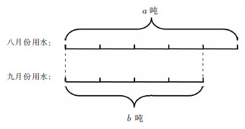
（汇报时，有位学生说“八月份用水量比九月份多八月份的
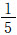
”，同学们听得一头雾水）师：人的脑袋怎样才会变得越来越聪明，就是从清醒到晕再到不晕，等你不晕了，你就变聪明了。
（课堂上发出一阵笑声）
生：先要找到标准量，也就是九月份的用水量。
师：越来越清醒了！
生：九月份是4等份，八月份比九月份多的是其中的一份，因此比九月份多 。
师：变聪明了。其实刚才那位同学也没说错，就是拐的弯多，把大家转晕了。
生：九月份用水量是八月份的
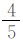
。师：如果用算式表示呢？
生：b=a× 。
师：还可以怎么说？
生：八月份用水量是九月份的
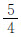
，a=b× 。生：九月份比八月份少 ，b=a×（1- ）。
生：八月份比九月份多 ，a=b×（1+ ）。
师：比较一下，九月份与八月份比的两个关系句，有什么发现？
生：九月份是八月份的 ，就是比八月份少 ，意思一样。
师：八月份与九月份比的两句呢？
生：意思也一样。
师：其实，这四个句子表示的两个月用水量的关系都是不变的。如果告诉我们八月份用水量是20吨，九月份用水量怎么求？
生：把上面关系式中的a改为20。
师：第一、三个直接算，而第二、四个关系式是方程，会解方程吗？试一试。
生：都等于16吨。
师：为什么答案都一样？
生：因为关系一样。
师：真聪明！万变不离其宗，这个“宗”找到了，就能以不变应万变了。
四、课堂总结，提炼方法
师：古人云：“千金难买——”
生：寸光阴。
师：在我们的学习过程中，千金难买回头看！回过头来看一看，我们是怎样找关系的？
生：用画，把问题画出来。
师：这是一种很好的办法！还有呢？
生：找准关系后，列出算式。
师：还有呢？
生：计算结果。
师：还有呢？
生：答。
师：其实，我们还用了一个好方法——比较。通过比较，知道“ ”与“ 吨”的不同意义，通过比较，知道事物之间的相同点和不同点，这样，才能做到“以不变应万变”。